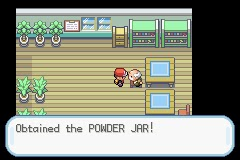
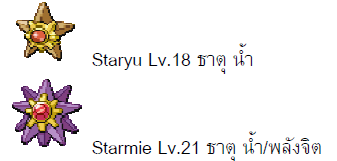
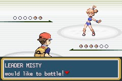
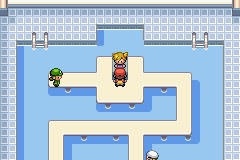
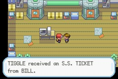
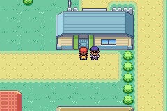
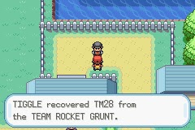
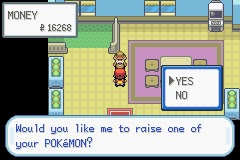
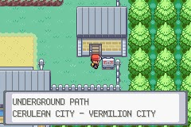

บทที่ 6 / 29
ฮานาดะซิตี้<Cerulean City>
❖
ก่อนเข้าเมืองฮานาดะซิตี้รองไปร้านจักยาน 555 เเอดมินร้องเลยจักยานราคา 1,000,000 B
จะบ้าตาย มาต่อกันเลย
จะบ้าตาย มาต่อกันเลย
ให้เข้าบ้านทางเหนือของโปเกมอนเซนเตอร์ จะมีคนให้ Powder Jar มา (ใช้เก็บเบอร์รี่ที่บดได้จาก
เครื่องบดเบอร์รี่ในการเชื่อมต่อระบบไร้สาย)

ให้เราสู้กับยิมลีดเดอร์ที่ชื่อว่าคาสึมิ<Misty>ได้เลย ยิมนี้จะให้โปเกมอนน้ำในการต่อสู้ ดังนั้นให้ใช้โปเกมอนไฟฟ้าหรือโปเกมอนหญ้าเข้าสู้ จะให้ผลลัพธ์ดีมาก

พอสู้เสร็จเราจะได้ Cascadebadge ที่ทำให้เราควบคุมโปเกมอนเลเวลต่ำกว่า30ได้(ตรงนี้สำคัญนะคะ ถ้าเกิน กว่านี้โปเกมอนจะไม่ฟังคำสั่งเรา อย่าฝึกเพลินล่ะ) และทำให้ใช้ท่าตัดต้นไม้ได้ พร้อมตังค์2100เยน และ TM03 Water Pulse


แล้วให้เราเดินไปทางทิศเหนือ โดยผ่านถนนหมายเลข24 ซึ่งมีลักษณะเป็น3เลน ก่อนที่เราจะผ่านไปได้เราจะ เจอคู่แข่งและต่อสู้กัน โปเกมอนที่ใช้มี4ตัว เลเวล15-18 พอสู้เสร็จ คู่แข่งจะให้Fame Checker (สามารถเช็คคำพูดที่คนบางคนเคยพูดไว้ ซึ่งจะบันทึกเฉพาะคนที่สำคัญ อยู่ในช่องKey Item) ให้เราเดินต่อ จะเจอ เทรนเนอร์5คนที่ยืนเรียงอยู่ พอสู้เสร็จเขาจะให้ Nugget (มีไว้ขาย ได้5000เยน) กับเรา (แถมยังต้องสู้ด้วย) ให้เราเดินแล้วเลี้ยวขวา เดินจนสุดทาง จะเจอบ้านของมาซากิ<Bill>อยู่ด้านบน ให้เราเข้าไป แล้วคุยกับ โปเกมอนที่อยู่ในบ้านตอบตกลง พอเข้าไปในแคปซูลแล้ว ให้เราสำรวจที่คอมพิวเตอร์ สักพักมาซากิจะออกมา จากแคปซูลอีกอัน ให้เราคุยกับเขา เขาจะให้ตั๋วเรือS.S Ticket มา

ให้เราออกจากบ้าน ทิศใต้ของบ้านจะมีทางโล่งๆ เป็นทางลัดกลับเข้ามาในเมือง ให้เราเดินกลับมาที่เมือง แล้วเข้าบ้านทางด้านบนของPokemon Center อยู่ด้านขวาที่มีตำรวจอยู่หน้าประตู ให้เราเข้าไป จากนั้นให้เข้ารูตรงหลังบ้าน สู้กับทีมร็อคเก็ต เมื่อชนะเขาจะให้ TM28


จากนั้นให้ใช้เส้นทางนี้เดินทางต่อไป ตรงไปยังถนนหมายเลข5 กระโดดลงเนินมาเรื่อยๆ จะพบบ้านที่รับฝากเลี้ยงโปเกมอน (เลี้ยงได้ครั้งละ1ตัว) พอสุดทางของถนนสายนี้ จะพบว่า เราไม่สามารถใช้ประตูเข้าเมืองยามาบูกิซิตี้ได้ ให้เราใช้ทางใต้ดิน(บ้านที่อยู่ใกล้ๆประตูเข้าเมืองยามาบูกิซิตี้ อยู่ติดด้านขวา)แทนผ่านถนน หมายเลข6 เข้าเมืองคุชิบะซิตี้

